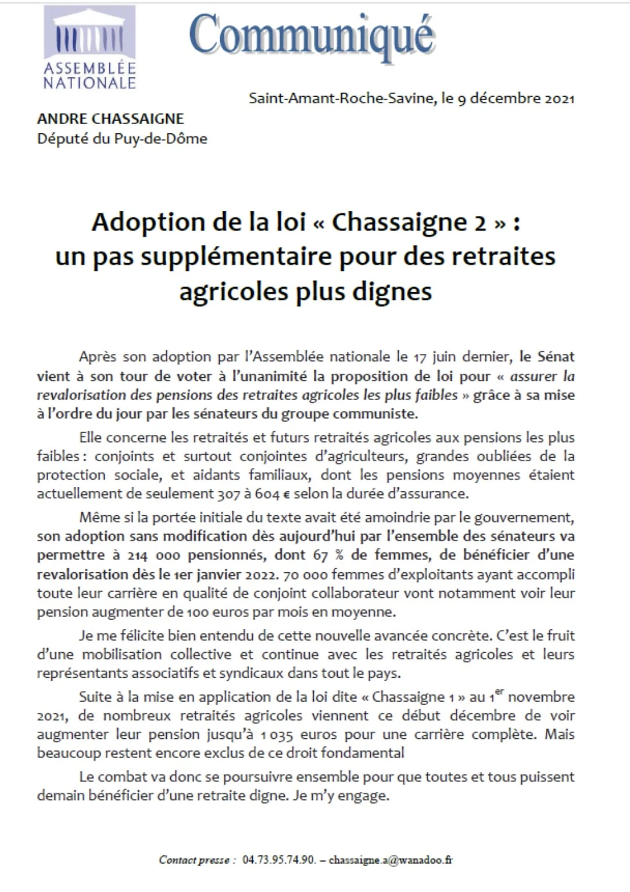

Repère
Décembre 2021. Un pas vers des retraites agricoles plus dignes
Date indiquée par Facebook · 10 décembre 2021
Repères éditoriaux
Le Parlement a adopté la deuxième loi Chassaigne en décembre 2021. Le texte du 17 décembre prévoit la revalorisation des plus faibles pensions agricoles à compter du 1er janvier suivant.
Texte conservé avec la publication
Adoption de la loi « Chassaigne 2 » : un pas supplémentaire pour des retraites agricoles plus dignes.
Le jeudi 9 décembre, la loi « Chassaigne 2 » en faveur de la revalorisation des retraites des conjointes d'exploitation et aidants familiaux était en débat au Sénat grâce à sa mise à l’ordre du jour par les Sénateurs Communistes Républicains Citoyens et Écologistes.
Adoptée à l'Assemblée nationale le 17 juin dernier, elle était présentée par Cathy Apourceau Poly, Sénatrice du Pas-de-Calais et défendue par Cécile Cukierman.
Le texte initial qui visait une retraite digne pour tous à 85 % du SMIC pour une carrière complète, a été sérieusement raboté par le Gouvernement et la majorité à l'Assemblée nationale. Son adoption par les sénateurs va permettre à 214 000 pensionnés, dont 67 % de femmes, de bénéficier d’une revalorisation dès le 1er janvier 2022.
Ainsi, 70 000 femmes d’exploitants ayant accompli toute leur carrière en qualité de conjoint collaborateur verront leur pension augmenter de 100 euros par mois en moyenne dès le 1er janvier.
Nous comptons sur l’engagement de tous aujourd’hui pour continuer à faire progresser l’exigence d’une retraite digne pour toutes les travailleuses et tous les travailleurs de l'agriculture.

Sources
Archive rouge · export Facebook · AR-0002-FB-01998
À lire aussi · Retraites agricoles. La deuxième loi Chassaigne entre en vigueur